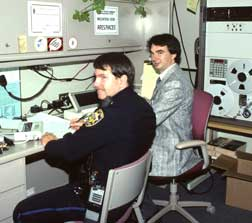

What is ARES/RACES?
ARES/RACES in Santa Clara County
ARES and RACES originated as separate organizations both focused on providing emergency communications. ARES, the Amateur Radio Emergency System, is sponsored by the Amateur Radio Relay League (ARRL) and provides local and regional communications support to government and non-government agencies such as the Red Cross and National Weather Service during emergencies. RACES, the Radio Amateur Civil Emergency Service, was established by the FCC. Amateur radio operators that are registered with local, state, or federal government emergency agencies provide communications assistance during civil emergencies.
In Santa Clara County where Mountain View is located, ARES and RACES were joined in 1978 in order to utilize the communications skills of amateur radio operators more efficiently. This integration facilitates an orderly transition and maintenance of communications when an emergency moves from being an initial response to an emergency declared by a government authority. More information on ARES and RACES is given below.
ARES/RACES in Mountain View
Amateur radio in the Mountain View area related to emergency communications started in 1952 as the Palo Alto Civil Defense Net, which held its first large disaster drill in 1953. The RACES (Radio Amateur Civil Emergency Service) had been set up by the FCC in 1952. Mountain View records show a “Civil Defense Test” on April 8, 1954 on 145.35 MHZ. Walter Read, W6ASH, reports that he and about four others participated in drills and Simulated Emergency Tests (SET) during the period 1957-60. They also conducted a net each Monday night on 146 MHZ. This continued until October 27, 1979 when the first SPECS (Southern Peninsula Emergency Communications System) repeater came on the air at 145.27 MHZ. Initially, this repeater was in the home of Walter Read but later a permanent facility was constructed on top of El Camino Hospital. SPECS participants grew steadily as shown by participation in SETs. In 1968 eight participants were involved, but by 1980 this had increased to 76. More information on this period is available at specsnet.org.
|  | |
|---|---|
| 1Mountain View Police Officer, Walter Johnson (WA6MUS) and Matthew Vurek (N4DLA) participating in a packet radio exercise in September 1991. |

{kind=link}
*2Mountain View Police Officer, Walter Johnson (WA6MUS) and Matthew Vurek (N4DLA) participating in a packet radio exercise in September 1991.*
In November, 1981 Seymour Stein, WA6ROM, became Emergency Coordinator (EC) in Mountain View. He was replaced as EC by Edgy Edgerton, WA6VZZ, in 1989, who was replaced by Terry Hoffman, KD6DIF, in 1994. Terry was replaced by Jerry Haag, K6GAC, in 2001. Leslie Grimm, KK6EKN, became EC in 2018.
Edgy Edgerton was the first EC appointed by ARRL for Mountain View ARES. He became a silent key in 1994. The oldest station log entry as Mountain View ARES was on March 20, 1989. Only one ham on that log entry is active in Mountain View ARES today: Rudy Bahr, W6OWI. In August, 1988, the Mountain View RACES Emergency Plan shows that there were approximately 20 members. The local station, K6MTV, which was commissioned in July 1988, was equipped with a high frequency (HF) transmitter in 1998 to provide communication with Kirkland, WA so that either location in a severe earthquake could contact the other to activate “Out of Area Telephone Support, (OATS)”.
In the 1980s, local ham operators were involved in more than 13 different emergencies, some out of area, including earthquakes, floods, a fire, a tornado, and the Olympic Games at Stanford. Later, assistance was provided after the local 1989 earthquake, Hurricane Katrina and the September 11 attack. In 2009, assistance was provided in Morgan Hill and Gilroy after cellphone, telephone, and internet service was disrupted by apparent sabatoge of telephone lines. In addition, the Mountain View ARES/RACES organization supports countless races, fairs, and other local events.
Additional pictures are included on this website. [TODO]
ARES
ARES consists of licensed amateurs who have voluntarily registered their qualifications and equipment for communications duty in the public service when disaster strikes. It operates under the auspices of the American Radio Relay League and was first organized in 1935 as the Amateur Radio Emergency Corps. In 2003, the Department of Homeland Security recognized ARES as a vital component of the new Citizen Corps. Since then, numerous other governmental agencies have renewed their relationships with ARES. Every licensed amateur, regardless of membership in ARRL or any other local or national organization, is eligible for membership in the ARES. The only qualification, other than possession of an Amateur Radio license, is a sincere desire to serve. Because ARES is an amateur service, only amateurs are eligible for membership. The possession of emergency-powered equipment is desirable, but is not a requirement for membership. To register as a Mountain View ARES member and add yourself to our roster please go to scc-ares-races.org/arrl-info.html and fill in as much info as you’re comfortable with. At the bottom of the form, select “Mountain View” for City, then click on “Submit”.
RACES
RACES was established under the Federal Communications Commission Rules and Regulations, as part of the amateur radio service. The mission of RACES is to establish and maintain the leadership and organizational infrastructure necessary to provide amateur radio communications in support of emergency management entities throughout the United States and its territories.
The County website has further information about ARES/RACES in Santa Clara County.
Relationship to CERT
ARES and CERT (Community Emergency Response Teams) are both affiliated with the Department of Homeland Security’s Citizen Corp.